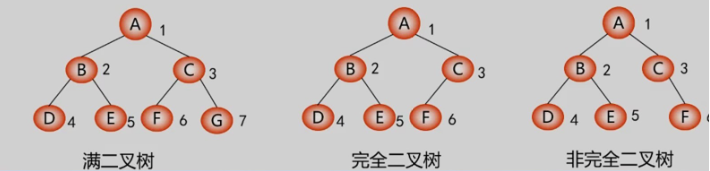
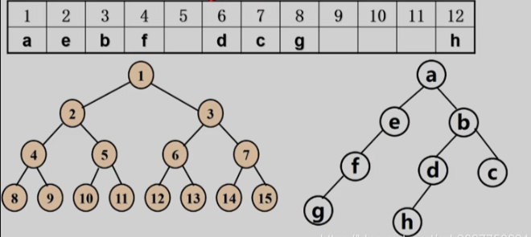
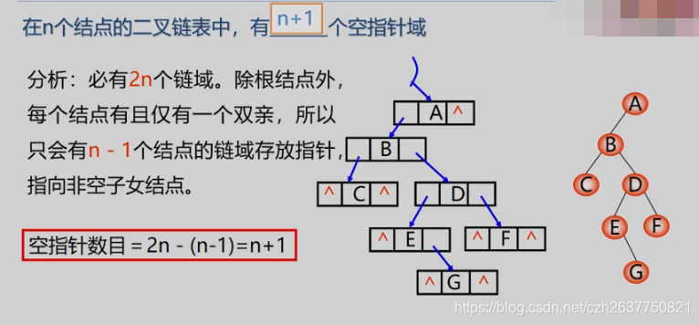
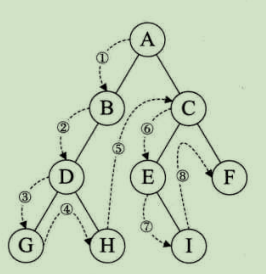
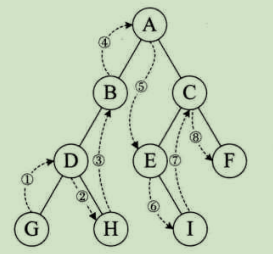
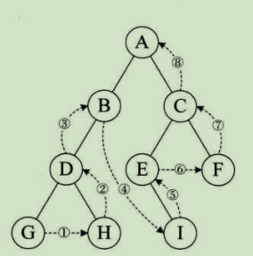
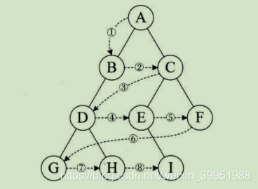

二叉树
定义
二叉树每个结点最多有两个子结点（左子结点和右子结点）。
所以二叉树不存在度大于2的结点。
二叉树是有序树，左右不能颠倒。
即使树中某一结点只有一棵子树，也要区分是左子树还是右子树。
二叉树的类型
1.斜树
所有结点都只有左子树的二叉树叫左斜树，右斜树同理。
2.满二叉树
在一棵二叉树中，如果所有分支都存在左子树和右子树，且所有叶结点都在同一层，则为满二叉树。假设树有 n 个节点，高度为 h，则 n = 2^h - 1。
3.完全二叉树
除了最后一层，所有结点都是满的，最后一层的结点必须从做到右连续排列。

二叉树的存储结构
1.顺序存储结构

2.二叉链表

二叉树的遍历
（1）前序遍历
若二叉树为空则返回，否则先访问根结点，然后前序遍历左子树，最后前序遍历右子树。

（2）中序遍历
若二叉树为空则返回，否则先中序遍历左子树，然后访问根结点，最后中序遍历右子树。

（3）后序遍历
若二叉树为空则返回，否则先后续遍历左子树，然后后续遍历右子树，最后访问根结点。

（4）层序遍历
从上到下，从左到右。

C#实现遍历
// 定义二叉树的结点
public class TreeNode
{
public int val;
public TreeNode left;
public TreeNode right;
public TreeNode(int val = 0, TreeNode left = null, TreeNode right = null)
{
this.val = val;
this.left = left;
this.right = right;
}
}
public class BinaryTree
{
// 前序遍历 - 递归
public void PreOrder(TreeNode root)
{
if (root == null) return;
Console.Write(root.val + "");
PreOrder(root.left);
PreOrder(root.right);
}
// 前序遍历 - 迭代
public IList<int> PreorderTraversal(TreeNode root)
{
IList<int> result = new List<int>();
Stack<TreeNode> stack = new Stack<TreeNode>();
if (root != null) stack.Push(root);
while (stack.Count > 0)
{
TreeNode node = stack.Pop();
result.Add(node.val);
// 注意：先将右节点压入栈中，再将左节点压入栈中
if (node.right != null)
{
stack.Push(node.right);
}
if (node.left != null)
{
stack.Push(node.left);
}
}
return result;
}
// 中序遍历 - 递归
public void InOrder(TreeNode root)
{
if (root == null) return;
InOrder(root.left);
Console.Write(root.val + " ");
InOrder(root.right);
}
// 中序遍历 - 迭代
public IList<int> InorderTraversal(TreeNode root)
{
Stack<TreeNode> stack = new Stack<TreeNode>();
IList<int> result = new List<int>();
TreeNode current = root;
while (current != null || stack.Count > 0)
{
// 先访问所有左节点
while (current != null)
{
stack.Push(current);
current = current.left;
}
// 访问当前节点
current = stack.Pop();
result.Add(current.val);
// 访问右子树
current = current.right;
}
return result;
}
// 后序遍历 - 递归
public void PostOrder(TreeNode root)
{
if (root == null) return;
PostOrder(root.left);
PostOrder(root.right);
Console.Write(root.val + "");
}
// 后序遍历 - 迭代
public IList<int> PostorderTraversal(TreeNode root)
{
IList<int> result = new List<int>();
Stack<TreeNode> stack = new Stack<TreeNode>();
TreeNode prev = null;
TreeNode current = root;
while (current != null || stack.Count > 0)
{
while (current != null)
{
stack.Push(current);
current = current.left;
}
current = stack.Peek();
if (current.right == null || current.right == prev )
{
result.Add(current.val);
prev = current;
stack.Pop();
current = null;
}
else
{
current = current.right;
}
}
return result;
}
// 层次遍历 - 队列
public IList<IList<int>> LevelOrder(TreeNode root) {
IList<IList<int>> result = new List<IList<int>>();
if (root == null) return result;
Queue<TreeNode> queue = new Queue<TreeNode>();
queue.Enqueue(root);
while (queue.Count > 0)
{
int levelSize = queue.Count;
List<int> curLevel = new List<int> ();
for (int i = 0; i < levelSize; i++)
{
TreeNode node = queue.Dequeue();
curLevel.Add(node.val);
if (node.left != null) queue.Enqueue(node.left);
if (node.right != null) queue.Enqueue(node.right);
}
result.Add(curLevel);
}
return result;
}
}